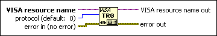

VISA Assert Trigger Function
Owning Palette: VISA VIs and Functions
Requires: Base Development System
Asserts a software or hardware trigger, depending on the interface type. For software triggers, Default (0) is the only valid protocol. For VXI hardware triggers, Default (0) is equivalent to Sync (5). For PXI triggers, PXI: Reserve (6) and PXI: Unreserve (7) are the only valid protocols.

 Add to the block diagram Add to the block diagram |
 Find on the palette Find on the palette |